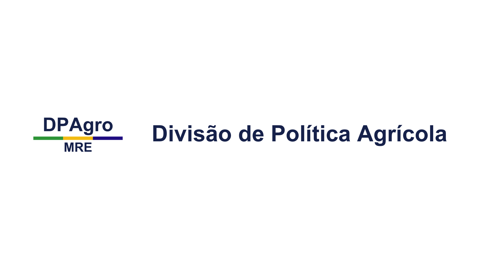

Sobre o Portal
Sob a bandeira do MRE (Ministério das Relações Exteriores), a DPAgro faz parte do Departamento de Política Comercial (DPC), interno à Secretária de Assuntos Econômicos e Financeiros(SAEF).
Sob a bandeira do MRE (Ministério das Relações Exteriores), a DPAgro faz parte do Departamento de Política Comercial (DPC), interno à Secretária de Assuntos Econômicos e Financeiros(SAEF).